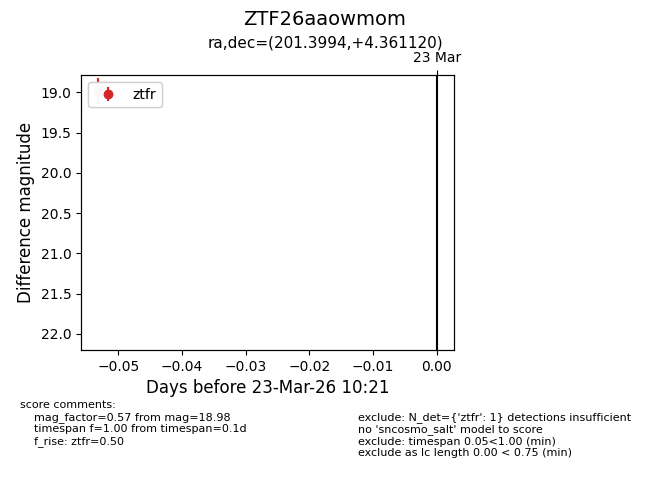
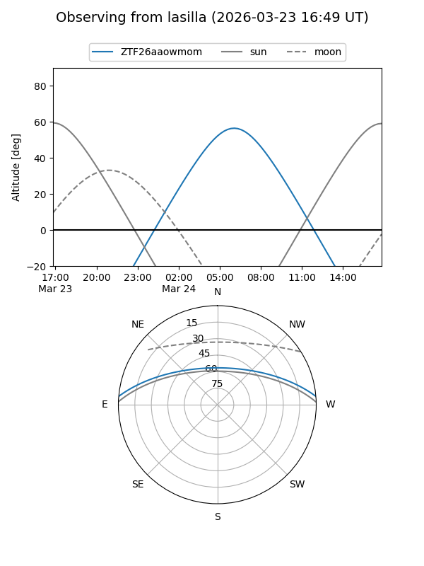
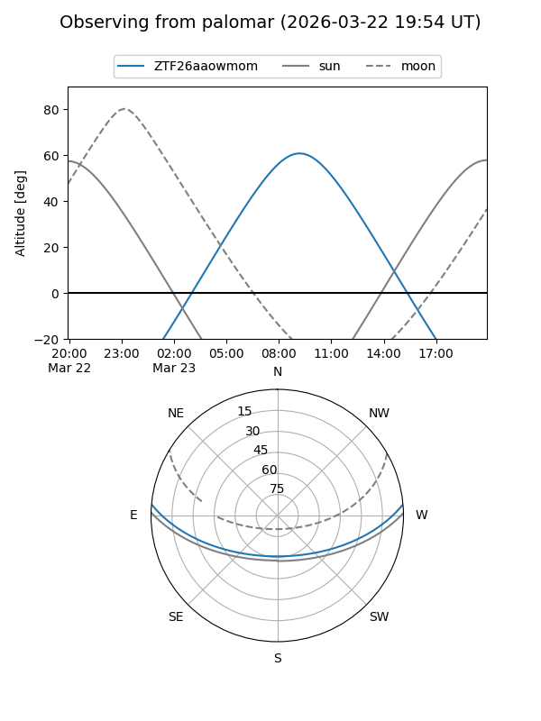

ZTF26aaowmom
Target ZTF26aaowmom at 2026-03-23 10:23
Aliases and brokers:
FINK: link
Lasair: link
ALeRCE: link
alt names
ZTF26aaowmom (ztf,fink_ztf)
Coordinates:
equatorial (ra, dec) = 201.3994,+4.36112
equatorial (HMS+DMS) = 13:25:35.87,+04:21:40.03
galactic (l, b) = (324.1218,+65.81762)
Flags:
Photometry:
last ztfr=18.98
1 ztfr detections
Lightcurve

Visibility


Additional plots